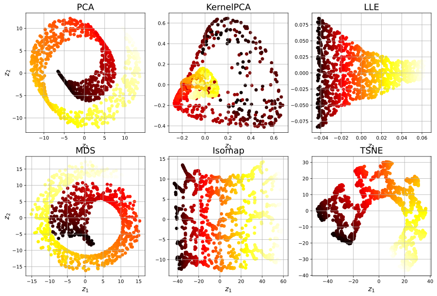

8.6 其他降维技术¶
8.6.1 随机投影¶
顾名思义，使用随机线性投影将数据投影到较低维度的空间。这听起来可能很疯狂，但事实证明，这样的随机投影实际上很有可能很好地保持距离，就如WilliamB.Johnson和Joram Lindenstrauss在著名引理中的数学证明。降维的质量取决于实例数目和目标维度，令人惊讶的不取决于初始维度。请查看sklearn.random_projection软件包的文档以获取更多详细信息。
8.6.2 多维缩放(MDS)¶
当尝试保留实例之间的距离是可以采用多维缩放
8.6.4 t分布随机近邻嵌入（t-SNE）¶
降低了维度，同时使相似实例保持接近，异类实例分开。它主要用于可视化，特别是在高维空间中可视化实例的聚类（例如，以2D可视化MNIST图像）。
8.6.5 线性判别分析（LDA）¶
LDA是一种分类算法，但是在训练过程中，它会学习各类之间最有判别力的轴，然后可以使用这些轴来定义要在其上投影数据的超平面。这种方法的好处是投影将使类保持尽可能远的距离，因此LDA是在运行其他分类算法（例如SVM分类器）之前降低维度的好技术。
[1]:
%matplotlib inline
import matplotlib as mpl
import matplotlib.pyplot as plt
import numpy as np
[2]:
from sklearn.datasets import make_swiss_roll
X, t = make_swiss_roll(n_samples=1000, random_state=42)
[3]:
from sklearn.decomposition import PCA
from sklearn.decomposition import KernelPCA
from sklearn.manifold import LocallyLinearEmbedding, MDS, Isomap, TSNE
pca = PCA(n_components=2, random_state=42)
kpca = KernelPCA(n_components=2, kernel="rbf", gamma=0.043333333, fit_inverse_transform=True)
lle = LocallyLinearEmbedding(n_components=2, n_neighbors=10, random_state=42)
mds = MDS(n_components=2, random_state=42)
isomap = Isomap(n_components=2)
tsne = TSNE(n_components=2, random_state=42)
[4]:
plt.figure(figsize=(15, 10))
for subplot, title, model in ((231, "PCA", pca), (232, "KernelPCA", kpca), (233, "LLE", lle),(234, "MDS", mds), (235, "Isomap", isomap), (236, "TSNE", tsne)):
X_reduced = model.fit_transform(X)
plt.subplot(subplot)
plt.title(title, fontsize=18)
plt.scatter(X_reduced[:, 0], X_reduced[:, 1], c=t, cmap=plt.cm.hot)
plt.xlabel("$z_1$", fontsize=14)
if subplot == 231 or subplot == 234:
plt.ylabel("$z_2$", fontsize=14)
plt.grid(True)
plt.show()

[5]:
from sklearn.discriminant_analysis import LinearDiscriminantAnalysis
X_new = np.array([[-1, -1], [-2, -1], [-3, -2], [1, 1], [2, 1], [3, 2]])
y_new = np.array([1, 1, 1, 2, 2, 2])
lda_clf = LinearDiscriminantAnalysis()
lda_clf.fit(X_new, y_new)
print(lda_clf.predict([[-0.8, -1]]))
[1]
[ ]: